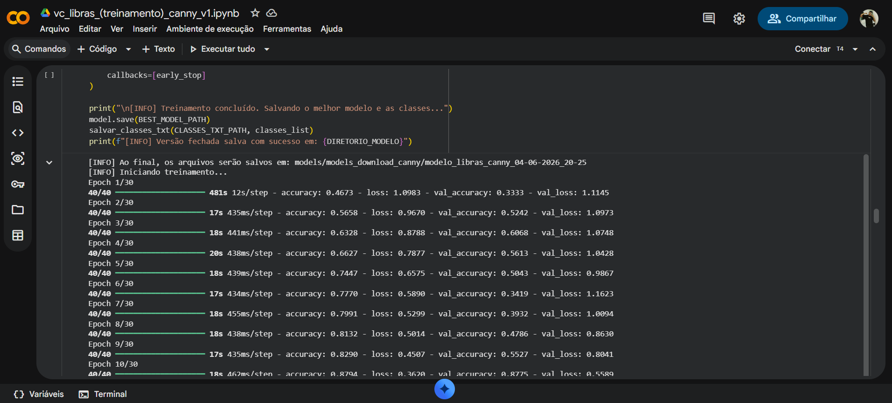
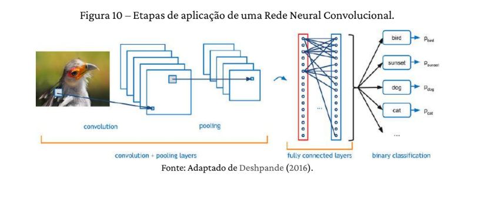

Inteligência Artificial para Reconhecimento de Libras

A comunicação de pessoas surdas enfrenta barreiras pelo desconhecimento da Libras e pela falta de recursos acessíveis. Para contornar os altos custos de processamento e softwares proprietários, essa pesquisa do grupo PET Elétrica da UFBA utiliza visão computacional e aprendizado de máquina para reconhecer, de forma eficiente, gestos manuais da Linguagem Brasileira de Sinais e expressões simples executados com uma mão, promovendo a inclusão social e educacional.
O desenvolvimento iniciou-se com uma ampla revisão bibliográfica referente à visão computacional aplicada a linguagens de sinais, abrangendo trabalhos acadêmicos e bibliografias especializadas para embasar as escolhas metodológicas. A partir dessa fundamentação, definiu-se a arquitetura de software e as ferramentas essenciais para o projeto. Para o rastreamento dos pontos anatômicos da mão e o processamento inicial das imagens capturadas por webcam, adotaram-se as bibliotecas MediaPipe e OpenCV, que oferecem alta precisão e processamento em tempo real com baixo uso de recursos. A construção e o treinamento do modelo de inteligência artificial foram direcionados para o uso de Redes Neurais Convolucionais (CNN) implementadas via TensorFlow, aproveitando a capacidade dessas redes em extrair padrões espaciais a partir de dados visuais. Como ambiente de desenvolvimento e testes, utilizou-se a plataforma Google Colab, adaptando e otimizando estruturas de modelos preexistentes direcionados à linguagem de sinais americana (ASL) para o contexto do alfabeto em Libras.
Para garantir a viabilidade técnica da solução, as frentes de trabalho foram estruturadas em tarefas específicas, incluindo o estudo do processamento de sinais para detecção de bordas das mãos, o ajuste dos hiperparâmetros da CNN para otimizar a acurácia do treinamento e a correção de falhas na integração do fluxo de vídeo em tempo real. Paralelamente, trabalhou-se no mapeamento e na estruturação de um banco de dados de imagens adequado para o treinamento supervisionado da rede. O projeto também contempla o suporte ao desenvolvimento de recursos físicos complementares de tecnologia assistiva, alinhando a modelagem computacional ao suporte prático para aprendizagem e promovendo um ciclo completo de validação e aprimoramento da ferramenta.

Plataforma Google Colab, utilizada para etapa de desenvonvolvimento e teste dos códigos de treinamento da IA.

Esquemático retirado de um material bibliográfico explicando com métodos gráficos o funcionamento de uma Rede Neural Convolucional (CNN).
O projeto está em fase de desenvolvimento onde foi adquirido um data set de três letras inicialmente com fotos feitas pelos petianos, reunindo duas mil fotos de cada letra para treinando do modelo de inteligência artificial e testes de parâmetros da CNN.